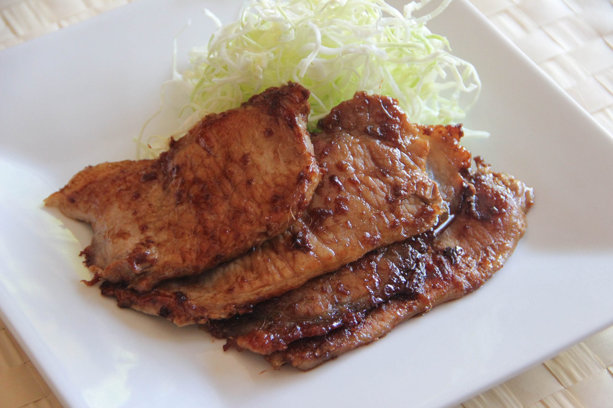

Shogayaki

Description
Shogayaki represents one of Japan's most beloved and simple to make recipes. Savory,
sweet and salty, your friends will ask you to make it regulary once you've mastered
its simple preparation. Welcome to the world of "Ginger Pork", Japanese style.
- pork shoulder
- ginger
- garlic
- soy sauce
- cooking sake
- honey/brown sugar
- olive oil
- cabbage
- grate garlic and ginger
- in separate bowl prepare seasoning
- 2tbs soy sauce
- 3tsp cooking sake
- 2tbs honey
- mix ginger and garlic with prepared seasoing
- marinate pork in seasoning bowl for 5 min
- dice cabbage
- preheat and add oil to pan
- cook pork 1min each side
- pour in excess seasoning